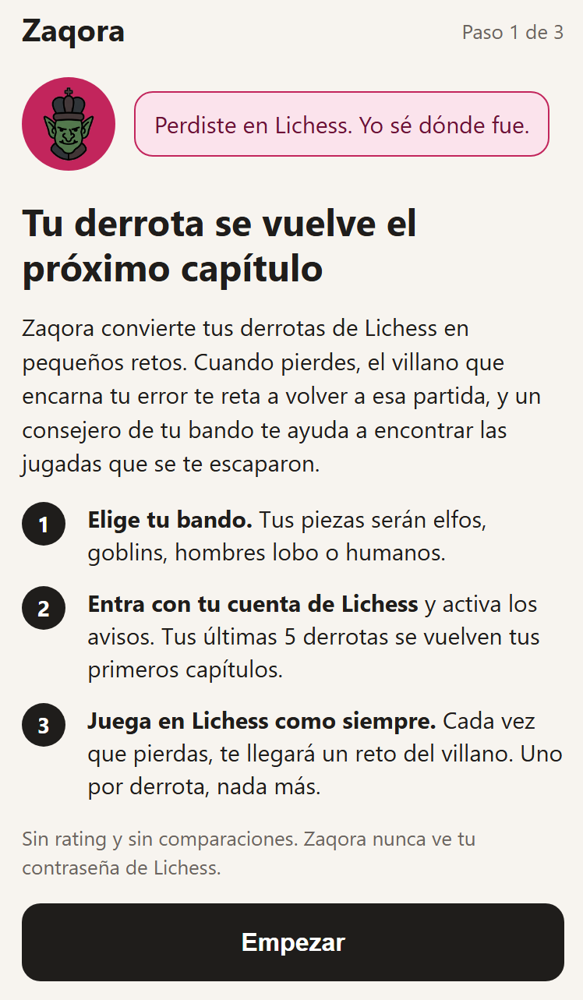
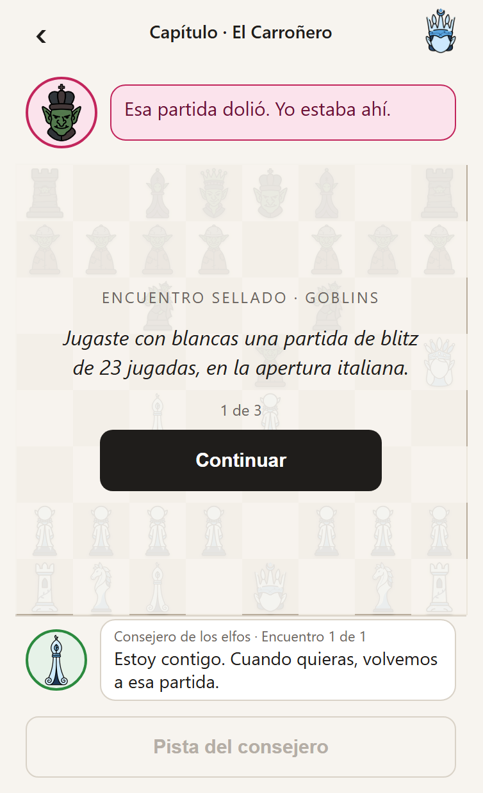

Proyecto final: Zaqora
Esta página es la memoria del proyecto: la guía que se llenó semana a semana, el plan de negocio y la evidencia de cada criterio de la rúbrica. Cada sección sigue la misma plantilla: versión y fecha, decisión, evidencia, qué cambió y qué falta. El detalle está en las páginas de cada semana, enlazadas en cada sección. Lo que no tiene evidencia está marcado como HIPÓTESIS o POR VERIFICAR.
Ruta de lectura de 10 minutos
0. Resumen ejecutivo → 5. Propuesta de valor → 13. Business Blueprint → 17. Integración y pruebas → 18. Pruebas con usuarios → 21. Uso de IA → 20. Pitch y demo
0. Resumen ejecutivo
Zaqora · equipo: David López Ramírez
«Cuando pierdes en Lichess y estás por cerrar la app, Zaqora valida tu frustración y la convierte en el próximo capítulo de tu historia.» (23 palabras)
Minutos después de una derrota en Lichess, un villano que encarna el error recurrente del jugador le manda un aviso a su celular y lo invita a una escena construida sobre esa misma partida. Sin rating ni comparaciones.
| Cifra clave | Valor | Origen |
|---|---|---|
| Mercado alcanzable (SAM) | 65,952 jugadores en México | Semana 4 · HIPÓTESIS en 3 filtros |
| Precio | $59 MXN al mes con IVA ($44.92 netos) | Semana 7 |
| Economía unitaria | LTV ÷ inversión 0.72; payback 13.8 meses | Semana 9 · con supuestos |

Enlaces: repositorio · Zaqora (prototipo publicado) · landing · video de respaldo de la demo
Estado en una oración: el jugador entra con su cuenta de Lichess, sus últimas 5 derrotas se vuelven capítulos con historia de IA y cada derrota nueva le llega sola como un reto, sin la laptop del equipo; cinco personas lo probaron y sus observaciones cambiaron el producto, pero todavía no se sabe si alguien que acaba de perder abre el reto.
| Versión y fecha | Versión 3, 27/11/2026 |
| Qué falta | Los resultados de la prueba de campo, que ya está en curso. Las cinco sesiones de prueba están hechas. La landing ya está publicada. |
Parte I. Oportunidad y mercado
1. Equipo
| Versión y fecha | Versión 1, semana 1 (28/08/2026); actualizada el 27/11/2026 |
| Decisión | Equipo de una persona: David López Ramírez, ingeniero mecatrónico, desarrollador y maestro de ajedrez. Hace todos los roles: investigación, diseño, programación, modelo económico y pitch. |
| Evidencia | Firma del syllabus (semana 1) · página principal |
| Qué cambió | El concepto de la semana 2 hablaba de «el equipo»; el modelo económico de la semana 8 dejó de contar sueldos porque el equipo es una sola persona. |
| Qué falta | Nada para la evaluación: un compañero opera la demo mientras David narra, y la ensayaron tres veces el 25/11/2026. |
2. Problema y oportunidad
| Versión y fecha | Versión 2, semana 3 (10/09/2026) |
| Decisión | Atacar el momento justo después de perder: el jugador amateur entra en una espiral de revancha o cierra la app sin aprender nada. |
| Evidencia | Pain-Gain Map y reporte de oportunidad (semana 2): dolor principal, perder muchas partidas (40–60 %); ganancia principal, un plan con sus partidas reales. Concepto elegido: «La Campaña», con 5/5 señales de deseabilidad. |
| Qué cambió | La semana 2 decía que el dolor era el juicio social; las entrevistas de la semana 3 lo refutaron en parte: el dolor es el tilt. |
| Qué falta | Medir con qué frecuencia ocurre el tilt y a cuántos jugadores describe (HIPÓTESIS). |
La oportunidad en una oración: existe una oportunidad para el jugador amateur de ajedrez en México que necesita dejar de perder partidas y aprender sin sentirse juzgado, porque hoy el aprendizaje viene con jerarquía o con el feedback frío de un motor.
3. Usuario y evidencia de campo
| Versión y fecha | Versión 2, semana 4 (17/09/2026) |
| Decisión | Segmento: jugadores amateur de ajedrez en línea en México, adultos, que juegan varias veces por semana en plataformas gratuitas y cierran la sesión tras dos o tres derrotas. El propio jugador paga. |
| Evidencia | Síntesis de 3 entrevistas (semana 3, Paso 7): H1 parcialmente refutada (no es miedo al juicio, es tilt), H2 sin evidencia directa. Cita: «No intenté analizar las partidas en ese momento porque sabía que iba a buscar excusas.» Segmento en cuatro capas en el Canvas de mercado (semana 4). |
| Qué cambió | De «evita la comparación social» a «cierra la app en plena racha»: el segmento se define por conducta, no por demografía. |
| Qué falta | Muestra de solo 3 entrevistas sin diversidad de perfiles. Disposición a pagar: HIPÓTESIS. |
| Capa | Dato | Estado |
|---|---|---|
| Demográfica | Adultos jóvenes en México que juegan en línea varias veces por semana | HIPÓTESIS |
| Conductual | Tras 2–3 derrotas cierran la app o se alejan 20 minutos | VERIFICADO en 3 entrevistas |
| Psicográfica | Frustración intensa; saben que deberían parar y siguen jugando | VERIFICADO en 3 entrevistas |
| Económica | Paga el propio jugador; clases particulares a $200–220 MXN la hora como referencia | HIPÓTESIS (disposición a pagar no medida) |
4. Mercado y competencia
| Versión y fecha | Versión 1, semana 4 (17/09/2026) |
| Decisión | No competir por profundidad de análisis ni por ranking. El competidor más peligroso es un hábito: cerrar la app después de dos derrotas. |
| Evidencia | TAM/SAM/SOM, mapa competitivo y lienzo Blue Ocean (semana 4). |
| Qué cambió | El SOM de 1,200 clientes suponía dos personas en ventas; con un equipo de una persona, el modelo a 5 años de la semana 8 usa 50 suscriptores al año 5. |
| Qué falta | Tres filtros del embudo (2 % juega en línea, 60 % se frustra, 10 % convierte) son supuestos propios sin fuente. |
| Nivel | Personas | Fuente y filtros |
|---|---|---|
| TAM | 82,440 | INEGI ENDUTIH 2024 (100.2 M usuarios de internet) y The CIU 2024; tres filtros supuestos |
| SAM | 65,952 | México, español y smartphone o navegador (80 %) |
| SOM | 1,200 en 2 años (supuesto de la semana 4) · 50 al año 5 (modelo vigente) | Capacidad de venta del equipo |
Competencia: directos (Chess Story, AI Dungeon + ajedrez, Story Time Chess), indirectos (Chess.com Game Review, apps de tácticas, coaching mental) y sustitutos (la regla de «2 derrotas = cerrar la app», el análisis manual en frío). Cuatro acciones del lienzo: eliminar el ranking interno; reducir la profundidad técnica del análisis; incrementar la integración con la sesión de juego; crear la validación emocional inmediata y la narrativa personalizada.
5. Propuesta de valor y oferta
| Versión y fecha | Versión 3, semana 4 (17/09/2026) |
| Decisión | «Cuando pierdes en Lichess y estás por cerrar la app, Zaqora valida tu frustración y la convierte en el próximo capítulo de tu historia.» (23 palabras) |
| Evidencia | Paso 5 de la semana 4 con el marco IDEO y la pirámide de Bain. |
| Qué cambió | La primera versión describía el producto («una aplicación con IA que genera una historia…»); la corrección fue cambiar el sujeto de la frase, del producto a la persona. |
| Qué falta | Que la validación de verdad haga actuar al jugador: es el supuesto que la prueba de la semana 8 no alcanzó a medir. |
| Oferta técnica | Nivel de Bain | Insightful · Unique · Targeted |
|---|---|---|
| PWA que detecta derrotas en Lichess, avisa con la voz de un villano y monta un capítulo con la posición del error | Emocional (alivio en el momento de la derrota); transformador solo si hay retención, todavía sin evidencia | Insightful: compite contra cerrar la app, no contra Chess.com · Unique: el villano sale de tus propias derrotas · Targeted: jugador de Lichess en plena racha |
6. Propiedad intelectual, marca y vigilancia
| Versión y fecha | Versión 1, semana 3 (10/09/2026) |
| Decisión | Nombre Zaqora (inventado, 3 sílabas, pronunciable en español e inglés). FTO alta. Estrategia: registrar la marca en las clases 9 y 41; no patentar por ahora. |
| Evidencia | Semana 3: sin registros de «Zaqora» en MARCANET en las clases 9 y 41; viabilidad digital 8.5/10; búsqueda en SIGA 2.0 del IMPI (10/09/2026), LATIPAT y Lens.org con la clasificación IPC A63F 13/00: sin anterioridades para ajedrez + IA + narrativa generada. |
| Qué cambió | Se descartaron Rookrise (marca existente en EE. UU.) y Pawnquest (descriptivo). |
| Qué falta | La búsqueda fonética formal y la solicitud ante el IMPI (POR VERIFICAR costo y plazo). Dominio: zaqora.com no se ha registrado. |
Parte II. Producto
Producto de software
Zaqora no tiene componente físico; así se acordó con el profesor desde el inicio del curso. En cada sección, la «carcasa» son los servicios que se integran, el «BOM» es el costo por usuario y la «manufactura» es construir y desplegar el software.
7. Especificación del producto (PDS)
| Versión y fecha | Versión 1.0, semana 5 (24/09/2026); estado actualizado el 24/11/2026 |
| Decisión | 16 requerimientos en cuatro categorías (4 por categoría), cada uno con su criterio de verificación. First-iteration product: una PWA en la que el jugador conecta su Lichess, recibe un capítulo con el villano de su error más frecuente y lo juega, sin que el equipo esté presente. |
| Evidencia | PDS completo (semana 5) |
| Qué cambió | La revisión DFM (semana 8) movió el análisis del servidor al navegador: RI-01 cambia (Stockfish solo en el cliente) y el villano ya no cita el error exacto en el aviso. |
| Qué falta | El rival que juega contra el jugador (RD-01, RD-03, RI-01) y las mediciones formales (RD-02, RI-03). El 24/11/2026 se cumplieron, en parte o por completo, el análisis, los villanos por patrón, los capítulos de varios encuentros y la plantilla de respaldo. |
| ID | Requerimiento (resumen) | Estado | Prueba |
|---|---|---|---|
| RF-01 | Análisis con Stockfish ≥ 16 y clasificación por caída de Win% | ✅ parcial | Stockfish 19 analiza cada derrota y clasifica por caída de Win% con los umbrales del PDS (≥ 30 / 20 / 10); falta medir el F1 contra profundidad 24 |
| RF-02 | Taxonomía de 8–12 patrones, un villano por patrón | ✅ parcial | 5 patrones con su villano (tiempo, pieza sin defensa, apertura, final, medio juego); faltan 3 a 7 más |
| RF-03 | Capítulo de 1 villano, ≥ 3 encuentros y jefe en ≤ 20 s | ✅ parcial | Hasta 3 encuentros por capítulo (los errores más grandes); falta el «jefe» y medir el tiempo (el análisis tarda unos 3 s por partida) |
| RF-04 | Evento narrativo tras derrotas, sin consejos fuera de la ficción | ✅ | El villano reta y el consejero del bando guía, siempre dentro de la ficción; sin Elo ni barra de evaluación |
| RD-01 | Bandas de dificultad del rival | ⏳ | — |
| RD-02 | Etiquetador de patrones con macro-F1 ≥ 0.70 | ⏳ | — |
| RD-03 | Jugada del villano en p95 ≤ 3 s | ⏳ | — |
| RD-04 | Diálogo del LLM con plantilla de respaldo | ✅ | Prueba T5 con una falla real: Cloudflare retiró el modelo y Zaqora siguió con plantillas. El diálogo se genera antes de enviar el aviso, así que no bloquea la escena |
| RI-01 | Stockfish WASM en el cliente | ⏳ | Revisión DFM (semana 8) |
| RI-02 | Lichess por OAuth 2.0 + PKCE, NDJSON y espera tras HTTP 429 | ✅ | «Entrar con Lichess» con PKCE y sin permisos extra; el detector espera 60 s tras un 429 y se identifica ante Lichess |
| RI-03 | WCAG 2.2 AA, destinos táctiles ≥ 24 px | ✅ parcial | Escena con botones de 48 px y casillas de 44 px; falta auditoría con axe y lectores de pantalla |
| RI-04 | El LLM recibe solo hechos del motor, sin datos personales | ✅ | La IA recibe color, ritmo, apertura, jugada, pieza y casilla; nunca el usuario ni el FEN. El validador rechaza casillas inventadas y soluciones reveladas |
| RR-01 | Costo ≤ $30 MXN por usuario activo al mes | ✅ | $0.80 a 100 usuarios y $4.00 a 20 (semana 8) |
| RR-02 | ≥ 60 % de las palabras desde plantillas | ❌ por decisión | Con la historia de IA, la mayoría del texto ya no es de plantilla. Se cambió porque el primer participante pidió una historia; el tope de costo (RR-01) se sigue cumpliendo. Hay que reescribir este requerimiento |
| RR-03 | Licencia GPLv3 de Stockfish | ✅ | Inicio muestra el aviso de licencia GPLv3 con enlace al código fuente de Stockfish (27/11/2026). Stockfish corre en GitHub Actions y no se distribuye al celular (semana 9) |
| RR-04 | LFPDPPP: aviso de privacidad, ARCO, menores | ✅ | Aviso de privacidad de la app publicado (24/11/2026), ARCO por correo y solo mayores de edad |
8. Arquitectura del sistema
| Versión y fecha | Versión 4, 24/11/2026 |
| Decisión | Todo en servicios gratuitos, sin servidor propio y sin la laptop del equipo: (1) el análisis (Stockfish 19) y el detector corren en GitHub Actions cada 10 minutos o a petición del jugador; (2) el narrador corre en Cloudflare Workers AI (Mistral Small 3.1), con plantilla de respaldo; (3) cuentas, capítulos y estado en Supabase, con una función que confirma la identidad con Lichess; (4) la PWA se instala desde una URL. Consecuencia: el reto llega entre segundos y unos 20 minutos después de perder, no al instante. |
| Evidencia | Arquitectura de la semana 5 · revisión DFM (semana 8) · integración del 24/11/2026 (semana 9) |
| Qué cambió | Semana 5: monolito en FastAPI con Stockfish en servidor (7 servicios). Semana 8: Stockfish al navegador y cron en Supabase, en diseño; el prototipo era un script en la laptop. 24/11/2026: el análisis se quedó en el detector (Stockfish 19, unos 3 s por partida) y el detector pasó a GitHub Actions, porque Supabase no puede correr Stockfish; entrada con OAuth de Lichess. |
| Qué falta | El rival en el navegador (Stockfish WASM) para jugar contra el villano; ver si el retraso de GitHub Actions es aceptable para los jugadores. |
Por qué cada protocolo: HTTPS con NDJSON para Lichess porque es lo que expone su API; OAuth 2.0 con PKCE porque Lichess acepta aplicaciones sin registro y así Zaqora nunca ve la contraseña; Web Push con VAPID porque es la única forma de avisar a una PWA cerrada sin tienda; REST de Supabase con RLS y una función (Edge Function) para que cada jugador lea solo sus capítulos.
Arquitectura actual (24/11/2026):
flowchart LR
subgraph CEL["Celular del jugador · PWA"]
INI["Inicio<br/>capítulos · Revisar ahora"]
ESC["Escena<br/>villano · consejero · tablero"]
SW["Service worker<br/>avisos"]
end
LI["Lichess<br/>OAuth · API de partidas"]
subgraph SB["Supabase"]
FN["Función «capitulos»<br/>confirma identidad con Lichess"]
DB[("jugadores · capitulos<br/>estado · suscripciones · eventos")]
end
subgraph GH["GitHub Actions · cada 10 min o a petición"]
DET["Detector<br/>Stockfish 19"]
end
IA["Cloudflare Workers AI<br/>Mistral Small 3.1"]
INI -->|"Entrar con Lichess (PKCE)"| LI
INI -->|"token de Lichess"| FN
FN -->|"¿quién es?"| LI
FN <--> DB
FN -->|"Revisar ahora"| GH
DET -->|"NDJSON"| LI
DET -->|"hechos de la partida"| IA
DET <-->|"service_role"| DB
DET -->|"Web Push (VAPID)"| SW
SW --> ESC
ESC -->|"avance"| FN
ESC -->|"eventos (solo inserción)"| DB9. Diseño del producto
| Versión y fecha | Versión 2, semana 6 (01/10/2026) |
| Decisión | Concepto C1 · Ghost Engine: novela visual en PWA, aviso push en la voz del villano, vector plano en SVG, tap origen → destino. |
| Evidencia | Tabla morfológica, 3 conceptos y matriz de Pugh (semana 6): Ghost Engine +39 frente a –3 (Cazador Fricción-Cero) y 0 (datum, El Entrenador Invisible); deseabilidad con 55 % del peso. La segunda matriz, con prompt propio, da el mismo ganador. |
| Qué cambió | Del primer boceto (tablero que desbordaba, 947 px de alto) al presupuesto vertical de 568 px; tono del villano de burlón a validante. El 24/11/2026: dos personajes (el villano reta y reacciona; un consejero del bando del jugador guía y da las pistas, en una franja bajo el tablero), bandos con assets propios (elfos, goblins, hombres lobo, humanos) y un bestiario de 5 villanos por patrón de error. |
| Qué falta | Ampliar el bestiario a 8–12 patrones; probar el tono y los personajes con más jugadores. |
Principios aplicados: tecnología calmada (un solo aviso por derrota, sin recordatorios), omitir también es diseñar (sin Elo, barra de evaluación ni historial de derrotas), tarea primero e instalación después («Guarda a tu villano» aparece al terminar el primer encuentro). Boceto con cotas: encabezado 48 px, franja del villano 80 px, tablero 352 px con casillas de 44 px, pie 64 px (vista frontal).
10. Prototipos y evidencia
| Versión y fecha | Versión 2, 24/11/2026 |
| Decisión | Probar primero el supuesto más riesgoso —que un jugador que acaba de perder abre el aviso del villano— con un prototipo de experiencia de baja resolución en modo «mago de Oz». |
| Evidencia | Plan, construcción y reporte (semana 8). Prueba de funcionamiento del 15/10/2026: el aviso llega, la escena abre, los eventos se registran y la derrota se detecta. |
| Qué cambió | El aviso pasó de WhatsApp a notificación de la app para medir el canal real; los mensajes ya no dan el detalle de la jugada (revisión DFM). |
| Qué falta | La prueba de la semana 8 no se realizó en su fecha. Del 23 al 25/11/2026 se hicieron las cinco sesiones con usuarios, que cambiaron el producto (ver la línea de tiempo y la §18), pero el supuesto central —que abre el reto justo después de perder— sigue sin validar: la prueba de campo ya está en curso con los participantes que tienen acceso. |
| Fecha | Prototipo | Pregunta | Aprendizaje |
|---|---|---|---|
| 01/10/2026 | Boceto en Figma y prototipo navegable en v0 | ¿Cabe la escena en un celular y se entiende? | El tablero desbordaba la pantalla; faltaba el flujo de entrada |
| 01/10/2026 | Segunda iteración en Figma | ¿El flujo de entrada funciona sin cuenta? | Entrada con un solo campo; instalación como recompensa |
| 15/10/2026 | PWA con avisos push, escena y detector (mago de Oz) | ¿Abre el jugador el aviso tras perder? | Técnicamente factible y gratis; sin respuesta sobre el comportamiento |
| 23/11/2026 | Revisión del detector frontera por frontera | ¿Qué pasa si la partida no tiene análisis? | Se enviaba una posición de ejemplo; corregido para esperar el análisis (semana 9) |
| 23/11/2026 | Primera sesión con un jugador externo (P1) | ¿Se entiende y se usa sin ayuda? | Seis observaciones, dos críticas (pedir el análisis a mano, instrucciones de iPhone); todas se corrigieron al día siguiente (semana 9) |
| 24/11/2026 | Bandos con assets propios | ¿Se puede elegir personaje y que el rival cambie? | El rival cambia por derrota entre los bandos que existan; las piezas pasaron de 39 MB a 1.9 MB |
| 24/11/2026 | Stockfish local, capítulos de 3 encuentros e historia con IA | ¿Puede llegar el capítulo sin que nadie pida el análisis y con una historia? | Sí: unos 3 s de análisis por partida; la IA escribe historia y diálogos y la plantilla cubre si falla |
| 24/11/2026 | Villano y consejero separados | ¿Quién ayuda al jugador? | El villano no puede enseñar a vencerlo; las pistas pasan al consejero del bando |
| 24/11/2026 | Entrar con Lichess, Inicio y detector en GitHub Actions | ¿Funciona sin la laptop y con el historial del jugador? | El primer contacto convierte sus últimas 5 derrotas en capítulos; «Revisar ahora» corre el detector en 31 s |
| 24/11/2026 | Segunda sesión (P2), ya con la versión nueva | ¿Se usa sin ayuda? | Tampoco pudo usarla solo; el análisis «tardaba mucho»; «Jugar en Lichess» distraía; pidió ver la partida completa. Inicio ahora muestra el avance de la revisión y el botón pasó a secundario |
| 25/11/2026 | Sesiones P3, P4 y P5 | ¿Se entiende el reto? ¿Pagarían? | Los que juegan entendieron el reto solos; «Revisar ahora» dio error 500 y se corrigió ese día; P3 pagaría «porque quiero aprender». P3 y P4 no tenían cuenta de Lichess, así que el aviso no se midió |
11. Manufactura, DFM y circularidad
| Versión y fecha | Versión 4, 24/11/2026 |
| Decisión | Volumen objetivo: piloto de 20 usuarios y hasta 1,000 activos al año 5. «Manufactura» = despliegue en servicios con capa gratuita. Tres cambios DFM: Stockfish al navegador, narrador más barato (capa gratuita de Workers AI) y Supabase Free hasta el año 3. |
| Evidencia | Revisión DFM y BOM actualizado (semana 8) · BOM verificado (semana 7) · Economía circular |
| Qué cambió | Costo por usuario activo de $16.18 (semana 7) a $4.72 (DFM) y a $4.00 (IA gratuita) a 20 usuarios. Servicios de 7 a 6; cuentas de pago de 3 a 1. |
| Qué falta | Confirmar en el piloto el consumo de IA medido el 27/11/2026 (38 neurons por capítulo); publicar en Google Play después de concretar la prueba piloto (decisión del 24/11/2026; exige una prueba cerrada de 12 testers durante 14 días y la facturación de Google al 15 %). Mientras tanto, Zaqora se usa como app web desde el navegador. |
BOM final (por mes, piloto):
| Componente | Especificación | Precio unitario | Proveedor | Tiempo de entrega |
|---|---|---|---|---|
| Narrador | Mistral Small 3.1 (Apache 2.0), dentro de la capa gratuita de 10,000 neurons al día (~263 capítulos al día; 38 neurons por capítulo, medido el 27/11/2026) | US$0; excedente a US$0.351 / US$0.555 por millón de tokens | Cloudflare Workers AI | Inmediato |
| Análisis | Stockfish 19 en el detector | US$0 | Código abierto (GPLv3) | — |
| Detector | GitHub Actions cada 10 minutos y a petición | US$0 (repositorio público) | GitHub | Inmediato |
| Rival (siguiente versión) | Stockfish WASM en el navegador | US$0 | Código abierto (GPLv3) | — |
| Base de datos y cron | Supabase Free; Pro desde el año 4 | US$0; Pro desde US$25 al mes | Supabase | Inmediato |
| Hosting de la PWA y la landing | Plan gratuito | US$0 | GitHub Pages (Cloudflare Pages si se vuelve comercial) | Inmediato |
| Dominio | .com | US$11.08 al año | Porkbun | Minutos |
| Cuenta de desarrollador | Pago único | US$25 | Google Play | 1–2 semanas (supuesto) |
| Pasarela de pago | Tarjeta nacional | 3.6 % + $3 MXN por cobro, sin IVA | Stripe México | Inmediato en modo de prueba |
Cómo reproducir una unidad: el README del prototipo explica cómo crear las tablas y la función en Supabase, generar las claves VAPID, guardar los secretos en GitHub y activar el detector.
Circularidad: reparabilidad (cada servicio se cambia por su API), modularidad (villanos y capítulos como plantillas de datos), ciclo de vida (derechos ARCO y borrado; falta exportar el progreso) y atemporalidad (la PWA se actualiza sola y funciona en un celular de 4 GB).
12. Aplicación conectada
| Versión y fecha | Versión 2, 24/11/2026 |
| Decisión | PWA instalable desde una URL, sin tienda: Inicio, activación y escena. El jugador entra con Lichess; los capítulos llegan como aviso y quedan en Inicio, ligados a su cuenta. |
| Evidencia | Wireframes y flujo de instalación (semana 6); prueba de funcionamiento (semana 8); integración y primera sesión (semana 9); repositorio con un commit por cambio. |
| Qué cambió | De una escena de un ejercicio a una app con navegación: activación por pasos, Inicio con el historial, capítulos de hasta 3 encuentros, consejero, bandos y cuenta de Lichess. |
| Qué falta | Jugar contra el villano (rival con Stockfish en el navegador); un mensaje visible sin conexión. |
Pantallas:
| Pantalla | Qué hace |
|---|---|
| Activación | Introducción, (en iPhone) agregar a la pantalla de inicio con instrucciones ilustradas, elegir bando, entrar con Lichess y activar los avisos |
| Inicio | «Comienza tu historia con tu cuenta de Lichess»; con sesión: último capítulo con su avance, capítulos anteriores, «Revisar mis partidas ahora», «Jugar en Lichess», cambiar de bando y «Salir» (borra los capítulos del teléfono y deja de recibir avisos) |
| Escena | Historia en 3 partes → «Muéstrame» → encuentros con el villano arriba y el consejero abajo → «Siguiente encuentro» → «Capítulo superado» → «Jugar en Lichess» |
Formato del dato: cada capítulo es un enlace con un parámetro c (JSON en base64url) que lleva la historia y, por encuentro, la posición (FEN), la solución (UCI), la jugada, el color y los diálogos del villano y del consejero. El aviso push lleva {titulo, cuerpo, url, etiqueta}. La tabla capitulos guarda ese mismo enlace con el usuario de Lichess y el avance.
Estados de la escena:
| Estado | Qué se ve | ¿Existe? |
|---|---|---|
| Elegir bando | Cuatro bandos con sus piezas | ✅ |
| Historia | 3 partes con «Continuar» | ✅ |
| Normal (sellado) | Tablero cerrado; «Muéstrame» y «Déjame en paz» | ✅ |
| Encuentro | Posición real; el villano reta y el consejero guía | ✅ |
| Jugada incorrecta | El villano se burla y el consejero anima; tras 3 fallos, «Muéstrame la jugada» | ✅ |
| Encuentro superado | Palomita y «Siguiente encuentro» | ✅ |
| Capítulo superado | Despedida del villano y «Jugar en Lichess» | ✅ |
| Sin historial | «Tu historia aún no empieza» y «Comienza tu historia» (abre Lichess) | ✅ |
| Sin conexión | La escena ya cargada se juega sin red; el avance se guarda en el teléfono | ⚠️ sin mensaje visible |


Versión del 24/11/2026, a 360 px de ancho: activación, historia del capítulo y encuentro (el jugador juega con elfos y el villano llega con goblins). El capítulo es un ejemplo armado para la captura, con la posición de la amenaza de mate del pastor; no es la partida de ningún participante.
Manual de usuario:
- Abre Zaqora en tu celular:
vidddda.github.io/Portafolio-193167/prototipo/activar.html. En iPhone, sigue los pasos para agregarla a tu pantalla de inicio y ábrela desde el ícono. - Elige tu bando y toca Entrar con Lichess. Autoriza a Zaqora en Lichess: solo confirma quién eres; nunca ve tu contraseña.
- En Inicio, toca Activar y permite las notificaciones.
- En unos minutos llega un aviso: tus últimas 5 derrotas ya son capítulos. Si aún no tienes partidas, te invita a jugar en Lichess.
- Abre un capítulo: lee la historia, toca Muéstrame y encuentra la jugada que se te escapó (toca la pieza y luego la casilla). Si te atoras, pide Pista del consejero.
- Juega en Lichess como siempre. Cada derrota nueva te llega como un reto; si no quieres esperar, toca Revisar mis partidas ahora en Inicio.
- Para dejar de recibir avisos en un teléfono, toca Salir en Inicio.
Limitaciones conocidas: el capítulo de una derrota llega cuando corre el detector (cada 10 minutos, con posibles retrasos de GitHub) o al tocar «Revisar ahora»; si el celular pasa más de 1 hora sin red, el aviso se pierde; en iPhone hay que instalar la app antes de activar los avisos y entrar con Lichess desde la app.
Parte III. Negocio
13. Modelo de negocio (Business Blueprint)
| Versión y fecha | Versión 2, semana 9 (23/11/2026) |
| Decisión | Freemium B2C con suscripción ligera; nunca se cobra en el momento de la derrota. |
| Evidencia | Benchmarking de 5 empresas (semana 7): Chess.com, Chessable, ChessMood, Duolingo y Habitica; el modelo predominante es freemium con suscripción. |
| Qué cambió | La semana 4 usaba $300 MXN al mes, por encima de casi todo el mercado; la semana 7 lo bajó a $59. |
| Qué falta | La disposición a pagar (HIPÓTESIS) y la carta de intención de una academia. |
| Caja | Contenido | Sustento |
|---|---|---|
| Clientes | Jugador amateur de Lichess en México que cierra la app tras perder | §3 |
| Oferta | Aviso del villano tras cada derrota y capítulo con la posición real | §12 |
| Propuesta de valor | Valida la frustración y la convierte en el próximo capítulo | §5 |
| Modelo de ingresos y precio | Primeros capítulos gratis; $59 MXN al mes con IVA o temporada de $149 | §14 |
| Canales | Venta directa (clubes y conocidos), landing con pre-registro, comunidades y streamers en español | §15 |
| Costos | Casi todos fijos y pequeños: dominio, cuenta de Play, Supabase Pro desde el año 4; IA en capa gratuita | §11 |
| Socios | Lichess (cuenta y datos, sin acuerdo formal), Cloudflare (IA), Supabase (datos), GitHub (detector y página), Stripe; una academia piloto desde el mes 7 | §16 |
| Equipo y recursos | Una persona; código abierto (Stockfish, python-chess) | §1 |
Desafío de diseño del modelo: cobrar sin hacerlo después de una derrota, con un tope de capítulos gratis que lleve la conversión del 5 % supuesto al 10 % que necesita la economía unitaria.
14. Costos, precio y viabilidad financiera
| Versión y fecha | Versión 3, semana 8 (actualización del 23/11/2026) |
| Decisión | Precio de $59 MXN al mes con IVA: entre el cost-plus ($5.87 a 100 usuarios y $12.37 a 20, con el modelo vigente; era $33–40 en la semana 7) y el value-based (hasta $79). El año 1 es una validación; el negocio se evalúa a 5 años. |
| Evidencia | Modelo económico (semana 7) · flujo a 5 años (semana 8) · hoja de cálculo con fórmulas |
| Qué cambió | VPN a 12 meses de −$2,636 (semana 7) a −$299 (vigente); VPN a 5 años de +$9,281. |
| Qué falta | Confirmar los tokens medidos con el consumo del piloto en el panel de Cloudflare. |
Costo de la IA medido (27/11/2026). Seis llamadas reales a Mistral Small 3.1 en Workers AI con el prompt del detector (cálculo y rangos, prueba T4):
| Medida | Valor |
|---|---|
| Tokens por capítulo de 3 encuentros | 666 de entrada + 334 de salida (promedio de 4 llamadas) |
| Neurons por capítulo | 38 (de 35 a 42) |
| Costo por capítulo, sin capa gratuita | US$0.00042 ≈ $0.008 MXN |
| Costo por usuario al mes (20 capítulos) | $0 dentro de la capa gratuita · $0.16 MXN si se pagara todo |
| Capa gratuita | 10,000 neurons al día ≈ 263 capítulos ≈ 390 usuarios activos |
El modelo económico sigue usando el costo de IA de Claude Haiku 5.5 ($0.50 al mes por usuario) para el excedente, como criterio conservador: es tres veces lo medido.
| Concepto | Resultado |
|---|---|
| Costo unitario por usuario activo (con 15 % de overhead y 25 % de contingencia) | $4.00 a 20 usuarios · $0.80 a 100 |
| Clasificación de costos | Fijos: dominio, cuenta de Play, Supabase Pro (año 4+) · Variables: IA por encima de la capa gratuita, comisión de Stripe por cobro |
| Costo de desarrollo por ciclos | Mínimo 48 h ($3,840) · promedio 64 h ($5,120) · máximo 96 h ($7,680), a $80 la hora · HIPÓTESIS: el promedio es la estimación de la semana 8; el mínimo es −25 % y el máximo +50 % |
| Inversión inicial | $667.48 |
| Precio cost-plus (40 % de margen, con IVA y comisión) | $12.37 a 20 usuarios · $5.87 a 100 (Excel vigente, hoja «Costo unitario») |
| Punto de equilibrio año 1 | 2 suscriptores (10 % de 20 usuarios) |
| VPN a 12 meses (15 %) | −$299 |
| Flujo a 5 años | Recuperación en el mes 21; acumulado de +$16,343 al año 5 |
| VPN a 5 años (15 %) | +$9,281 |
La tasa del 15 % anual es la del curso: el costo de oportunidad de un proyecto personal sin financiamiento, por encima de la tasa de un instrumento de bajo riesgo.
15. Go-to-market y economía unitaria
| Versión y fecha | Versión 1, semana 9 (23/11/2026) |
| Decisión | Primeros 20 por venta directa y landing con pre-registro; sin cobro anticipado durante el curso. |
| Evidencia | Economía unitaria y palancas (semana 9) |
| Qué cambió | Primera versión. |
| Qué falta | Conversión, churn y horas de activación son supuestos; ninguno está medido. |
| Métrica | Valor | Medido o supuesto |
|---|---|---|
| Contribución mensual por suscriptor | $28.92 | Medido (precios verificados) sobre una conversión supuesta del 5 % |
| CAC | $400 | Supuesto (0.25 h por usuario activado a $80 la hora) |
| Churn mensual | 10 % | Supuesto |
| LTV | $289 | Derivado |
| LTV ÷ inversión | 0.72 (meta: 3) | Derivado |
| Payback | 13.8 meses (meta: < 12) | Derivado |
Palancas: conversión de 5 % a 10 % → 1.85; más churn de 6 % → 3.08. La conversión mueve más que el churn y el CAC porque cambia los dos lados de la cuenta.
16. Regulación y aspectos legales
| Versión y fecha | Versión 2, 24/11/2026 |
| Decisión | Durante el curso, solo pre-registro con aviso de privacidad y pruebas con consentimiento de mayores de edad. Antes de cobrar: RFC, CFDI, Stripe verificado y términos que cumplan el art. 76 BIS de la LFPC. |
| Evidencia | Checklist regulatorio (semana 9), con texto vigente de la LFPDPPP y la LFPC, y licencias de Stockfish, Mistral Small 3.1, Workers AI, Lichess (API y OAuth). Aviso de privacidad de la app, publicado el 24/11/2026. |
| Qué cambió | El PDS (semana 5) ya pedía aviso de privacidad y ARCO; se suman los cobros recurrentes de la LFPC (reforma del 12/12/2025). Desde que se entra con Lichess, Supabase guarda el usuario de Lichess con sus capítulos y GitHub analiza las partidas: el aviso lo declara. |
| Qué falta | POR VERIFICAR: requisitos fiscales del SAT, alta en Stripe y costo del registro de marca. |
| Tema | Estatus |
|---|---|
| Datos personales (LFPDPPP, 2025) | VERIFICADO |
| Licencias: Stockfish GPLv3, Mistral Small 3.1 (Apache 2.0), Workers AI, API y OAuth de Lichess | VERIFICADO |
| Comercio electrónico y suscripciones (LFPC, art. 76 BIS) | VERIFICADO |
| Google Play | VERIFICADO (semana 8) |
| Stripe, SAT y marca en el IMPI | POR VERIFICAR |
| Radio, NOM, baterías, REP, exportación | No aplica |
Parte IV. Validación y lanzamiento
17. Integración y pruebas del sistema
| Versión y fecha | Versión 2, 24/11/2026 |
| Decisión | Cinco fronteras: F1 Lichess → detector, F2 detector → celular, F3 motor → narrador, F4 escena → jugador y registro, F5 cuenta → capítulos. Seis pruebas T1 a T6 adaptadas a software. |
| Evidencia | Fronteras, pruebas, fallas encontradas y degradación (semana 9) · registros de las corridas en GitHub Actions |
| Qué cambió | El detector pasó a la nube, el análisis a Stockfish y la entrada a OAuth. Se encontraron y corrigieron seis fallas de frontera el mismo día (clave VAPID mal pegada, modelo de IA retirado, ícono de iPhone sin código, entre otras). |
| Qué falta | T1 con alguien nuevo, T2 con una derrota nueva y T3. Lanzar el detector desde Supabase para que corra de verdad cada 10 minutos. |
| Prueba | Resultado |
|---|---|
| T1 Activación sin ayuda (< 5 min) | ⚠️ No cumplió en P1 («complicado de seguir») ni en P2, ya con la activación rehecha; falta ubicar el paso donde se atoran. En P3 y P4 no se midió (sin cuenta de Lichess) |
| T2 Derrota → aviso (≤ 10 min) | ⚠️ Parcial: «Revisar ahora» tarda 31 s; solo, el detector está programado cada 10 min, pero GitHub lo corre cada 6 a 9 horas; falta medir con una derrota nueva |
| T3 Celular sin red | ⏳ Pendiente; el aviso dura 1 hora en el servicio push |
| T4 Autonomía de la capa gratuita | ✅ Unos 390 usuarios activos a 20 capítulos al mes (38 neurons por capítulo, medido el 27/11/2026) |
| T5 Falla de la API de IA | ✅ Con una falla real: el modelo se retiró y Zaqora siguió con plantillas |
| T6 48 h continuas | ✅ 19 de 19 corridas sin error en 67 h (24 al 27/11/2026), sin la laptop. ⚠️ La frecuencia no cumple: GitHub corrió las programadas cada 6 a 9 horas |
| Checklist de listo | Estado |
|---|---|
| Funciona sin la laptop del equipo | ✅ |
| App desplegada | ✅ |
| Landing publicada | ✅ landing (24/11/2026) |
| Flujo sin intervención | ✅ |
18. Pruebas con usuarios
| Versión y fecha | Versión 2, 27/11/2026 |
| Decisión | Protocolo de 30 minutos con tres tareas (activar los avisos; abrir el aviso y jugar el encuentro; encontrar el precio y pre-registrarse) más una prueba de campo de 3 a 5 días. |
| Evidencia | Protocolo (semana 9) |
| Qué cambió | La prueba de la semana 8 se suma a esta. 23/11/2026: primera sesión con un jugador externo (P1): seis observaciones, dos críticas, todas corregidas al día siguiente (detalle). Las tareas se adaptaron a la versión nueva (entrar con Lichess; primer contacto con las 5 derrotas). Segunda sesión (P2), con la versión nueva: no pudo usarla solo, el análisis le pareció lento y pidió ver la partida completa. 25/11/2026: P3, P4 y P5: entendieron el reto, «Revisar ahora» falló con error 500 (corregido ese día) y salieron dos peticiones: pistas más graduales e iluminar las jugadas posibles. |
| Qué falta | El SEQ y los tiempos completos (solo P2 los tiene), una sesión con aviso real en P3 y P4, y los resultados de la prueba de campo (en curso). |
| # | Hallazgo (1–6: P1; 7–10: P2; 11–15: P3 a P5) | Severidad (propuesta) | Cambio |
|---|---|---|---|
| 1 | «Complicado de seguir» | Mayor | Activación por pasos |
| 2 | Falta una introducción | Mayor | Pantalla de introducción |
| 3 | Instrucciones de iPhone «no intuitivas» | Crítico | Instrucciones ilustradas en 4 pasos |
| 4 | Hay que pedir el análisis a mano | Crítico | Stockfish analiza cada derrota |
| 5 | «Solo es un ejercicio»; quiere una historia | Mayor | Hasta 3 encuentros e historia con IA |
| 6 | El ícono del villano se repite | Menor | El villano cambia entre bandos rivales |
| 7 | No pudo usar la app solo | Mayor | Pendiente: ubicar el paso donde se atora |
| 8 | El análisis «tardaba mucho» | Mayor | Avance de la revisión por etapas; el capítulo aparece en cuanto llega |
| 9 | «Jugar en Lichess» distraía | Menor | Botón secundario en Inicio |
| 10 | Quiere ver la partida completa | Petición | Pendiente: visor de la partida |
| 11 | «Revisar ahora» dio error 500 (P3, P4) | Crítico | Corregido el 25/11/2026 |
| 12 | Sin cuenta de Lichess no hay aviso que probar (P3, P4) | Menor | Reclutar solo a quien juega en Lichess |
| 13 | Los encuentros costaron demasiado (P3) | Mayor | Pendiente: pistas más graduales |
| 14 | Iluminar las jugadas posibles (P4) | Petición | Pendiente |
| 15 | No juega ajedrez y no la entendió (P5) | Fuera del segmento | Ninguno |
Resultados por tarea (P1 a P5). Formato: ¿sin ayuda? · tiempo · SEQ (facilidad de 1 a 7, preguntada al terminar la tarea). «—» = no se registró. En P3 y P4 los tiempos son aproximados (audios y registros de la app) y el SEQ no se preguntó.
| Tarea | P1 (23/11) | P2 (24/11) | P3 (25/11) | P4 (25/11) | P5 (25/11) |
|---|---|---|---|---|---|
| T1 Empezar | No · — · — | No · 3 min · 5 | No (sin cuenta de Lichess) · ~0.5 min · — | No (sin cuenta de Lichess) · ~0.5 min · — | — |
| T2 Primer capítulo | No · — · — | No · 3 min · 5 | No (vio la solución en 2 de 3 encuentros) · ~3 min · — | Sí · ~2 min · — | No (no juega ajedrez) · — · — |
| T3 Revisar ahora | No existía (versión de la semana 8) | No · 3 min · 5 | Falló (error 500) | Falló (error 500) | — |
| T4 Precio en la landing | Landing sin publicar | — | Sí · ~1 min · — | Sí · ~0.5 min · — | — |
Éxito sin ayuda: T1, 0 de 4 · T2, 1 de 5 · T4, 2 de 2. SEQ solo en P2 (5 de 7 en sus tres tareas).
Señal de negocio. Compromisos reales, de la tabla eventos de Supabase al 27/11/2026: 8 visitas a la landing, 4 clics en «Quiero entrar a la beta» y 1 pre-registro. Tres de esos clics y el pre-registro son de una misma sesión de la noche del 24/11, que puede ser una prueba del equipo; P3 visitó la landing y tocó el botón, pero no dejó su correo. Opiniones (no cuentan como compromiso): P3 «sí, pagaría… porque quiero aprender»; P4, fuera del segmento, «la verdad no»; P1 le mandaría la página a un conocido «si pudiera».
19. Landing page
| Versión y fecha | Versión 1, semana 9 (23/11/2026) |
| Decisión | Una página, una acción: pre-registro con correo para la beta, con el precio visible ($59 MXN al mes con IVA, beta gratuita). |
| Evidencia | Landing construida en docs/landing/ con headline, visual, tres beneficios, cita de las entrevistas, precio, CTA único, Open Graph y aviso de privacidad (se publican juntos). Anatomía (semana 9). |
| Qué cambió | 24/11/2026: publicada en landing/, con el video real del prototipo (35 s) en lugar de la captura de la semana 8, capturas nuevas del capítulo y el consejero en vez del villano como guía. |
| Qué falta | Más tráfico: al 27/11/2026 hay 8 visitas, 4 clics en el CTA y 1 pre-registro, que puede ser una prueba del equipo (§18). |
20. Pitch y demo
| Versión y fecha | Versión 2, 24/11/2026 |
| Decisión | Pitch de 352 palabras (2:42) que abre con un jugador real de las entrevistas y cierra con el ask: cinco jugadores y un club o streamer para un piloto de 20. Demo de 7 minutos: entrar con Lichess, capítulos de las últimas derrotas, una derrota en vivo contra la computadora y «Revisar mis partidas ahora». |
| Evidencia | Preguntas difíciles con su respuesta (abajo) · Guion del pitch con la evidencia de cada cifra · guion de la demo con plan B · video de respaldo de la demo (1:49: entrar con Lichess, derrota real, «Revisar mis partidas ahora» y el capítulo; esperas aceleradas y marcadas) |
| Qué cambió | La tracción ahora cuenta las cinco sesiones y una respuesta de P1 («cerrar la aplicación»); la confesión pasó a ser «todavía no sabemos si abren el reto justo después de perder». La demo ya no usa la laptop. |
| Qué falta | Nada obligatorio. La demo ya se ensayó tres veces (25/11/2026). El video del pitch es opcional y no se grabó: el pitch se presenta en vivo con este guion. |
Preguntas difíciles de inversionista:
| Pregunta | Respuesta corta | Dónde se sostiene |
|---|---|---|
| ¿Por qué alguien usaría esto y no el análisis de Chess.com? | Justo después de perder nadie quiere un análisis frío: los tres entrevistados cierran la app. Zaqora compite contra cerrar la app, no contra Chess.com. | §3, §4 |
| Tu LTV ÷ CAC es 0.72. ¿No funciona el negocio? | Con los supuestos de hoy no cierra. El problema no es el costo ($0.80 por usuario), es que cada suscriptor cuesta 20 activaciones. Con conversión de 10 % y churn de 6 % llega a 3.08; eso mide el piloto. | §15 |
| ¿Por qué $59? | El costo está muy por debajo (cost-plus de $5.87–12.37) y el techo estimado es $79; es menos que Chess.com o Duolingo. La disposición a pagar sigue siendo HIPÓTESIS. | §14 |
| ¿Y si se acaba la capa gratuita de IA? | Alcanza para unos 390 usuarios activos. Pagando, un capítulo cuesta menos de un centavo ($0.008, medido): $0.16 al mes por usuario contra $44.92 de ingreso neto. | §14, §21 |
| ¿Qué pasa si Lichess cambia su API? | Es el riesgo de plataforma principal. Sus términos permiten el uso comercial con límites razonables, y Zaqora los respeta (una petición a la vez, espera tras un 429). | §16, §22 |
| ¿Alguien abrió el aviso justo después de perder? | Todavía no se sabe: es el supuesto que decide todo y lo mide la prueba de campo, en curso. Por eso el ask son cinco jugadores durante una semana. | §18, §22 |
| ¿Es rentable? | El año 1 es validación (VPN de −$299). A 5 años, VPN de +$9,281 y recuperación en el mes 21, con usuarios supuestos. | §14 |
| Eres una sola persona. ¿Lo puedes sostener? | Todo corre en servicios automáticos y gratuitos: el detector y el análisis no dependen de la laptop (19 de 19 corridas sin error en 67 h). | §1, §17 |
Parte V. Cierre
21. Uso de IA en el proyecto
| Versión y fecha | Versión 3, 27/11/2026 |
| Decisión | En el proceso, la IA generó insumos y el equipo eligió. En el producto, el motor calcula y el LLM solo narra, siempre con una plantilla de respaldo. |
| Evidencia | Prompts del profesor y de autoría propia con sus respuestas en cada semana (2 a 8). |
| Qué cambió | El narrador pasó de Claude Haiku 4.5 a Haiku 5.5, después a Llama 3.1 en la capa gratuita de Workers AI y, cuando Cloudflare lo retiró, a Mistral Small 3.1 (elegido tras probar 5 modelos con la misma partida). Ahora escribe la historia y los diálogos del villano y del consejero. |
| Qué falta | Confirmar el costo medido con el consumo del piloto; comparar con jugadores la historia de IA contra la de plantilla (la escena registra cuál vio cada uno). |
Los cinco prompts que más cambiaron el proyecto:
| Prompt | Qué se pidió | Qué cambió | Qué corrigió el equipo |
|---|---|---|---|
| Síntesis de entrevistas (semana 3) | Verificar H1 y H2 con 3 entrevistas | El dolor pasó del juicio social al tilt | Se reconoció que 3 entrevistas no miden frecuencia |
| Propuesta de valor IDEO/Bain (semana 4) | Propuesta en ≤ 25 palabras | El sujeto pasó del producto a la persona | Se bajó el nivel de Bain a emocional por falta de evidencia de retención |
| PDS y arquitectura (semana 5) | Requerimientos verificables | «El LLM no juega ajedrez»: motor calcula, LLM narra | Se eligió un solo umbral donde tres documentos daban tres distintos |
| Matriz de Pugh (semana 6) | Elegir entre 3 conceptos | Ghost Engine (+39), con la advertencia del tono | Se descartó un criterio en el que todos empataban |
| Revisión DFM (semana 8) | Reducir costo y partes | Stockfish al navegador; costo de $16 a $4.72 | Se verificó cada precio en la página del proveedor |
Un caso donde la IA se equivocó: el modelo económico de la semana 7 con prompt propio armó una startup que necesitaba $1.0 M MXN, porque reutilizó supuestos de la semana 4 ($300 al mes, 1,200 clientes, sueldos). Además, ninguna respuesta de IA mencionó que Vercel Hobby prohíbe el uso comercial ni que existía Claude Haiku 5.5: los dos hallazgos salieron de verificar los precios a mano. En el producto: la IA del narrador malinterpretó un dato del resumen («solo analizaste la mitad» de las derrotas, cuando era un dato interno del detector) y en otra prueba dijo «seis veces» cuando eran cinco; se quitó ese dato de lo que recibe y los números del aviso se escriben sin IA.
En el producto:
| Qué hace | Escribe la historia del capítulo (3 partes) y, por encuentro, el reto del villano, la guía del consejero y la reacción del villano |
| Dónde corre | Cloudflare Workers AI (Mistral Small 3.1); el análisis, Stockfish 19 en el detector (GitHub Actions) |
| Qué recibe | Un JSON con hechos calculados (color, ritmo, apertura, jugada, pieza, casilla, gravedad), sin FEN ni datos personales (RI-04) |
| Qué devuelve | {historia: [3], encuentros: [{antes, consejo, despues}]}, con largos máximos; el validador rechaza casillas inventadas y soluciones reveladas |
| Costo por usuario | $0 dentro de la capa gratuita (unos 390 usuarios activos). Por encima: US$0.00042 por capítulo (666 + 334 tokens, 38 neurons), unos $0.16 MXN al mes por usuario · medido el 27/11/2026 con llamadas reales (§14) |
| Si falla | Se usa la plantilla; nunca se muestra un texto inválido. Pasó de verdad cuando Cloudflare retiró Llama 3.1 |
| Por qué sería peor sin IA | Sin el motor (Stockfish, una red neuronal) no hay posición del error. Sin el LLM, el villano repetiría plantillas y dejaría de sonar como alguien que vio tu partida: HIPÓTESIS, por probar con usuarios |
22. Reflexión y siguientes pasos
| Versión y fecha | Versión 2, 24/11/2026 |
| Decisión | El siguiente paso es la prueba con usuarios, no más diseño. La primera sesión lo confirmó: una hora con un jugador cambió más que una semana de diseño. |
| Evidencia | Reflexiones de cada semana (5, 6, 7, 8, 9). |
| Qué cambió | Se agregó el aprendizaje del semestre a partir de las reflexiones semanales. |
| Qué falta | Los resultados de la prueba de campo (en curso). |
Aprendizaje más importante del semestre (David López Ramírez):
Lo más importante que aprendí este semestre es que el producto lo deciden las personas, no mis documentos. Cada giro de Zaqora vino de alguien real: una sola frase de una entrevista, «sabía que iba a buscar excusas», cambió el problema de «no sé qué estudiar» al tilt; el análisis de competencia no terminó en otra app, sino en un hábito, cerrar la sesión después de perder; y una hora con el primer jugador que lo probó cambió más que una semana de diseño. También aprendí que construir es más fácil que preguntar: en la semana 8 tenía un prototipo funcionando y ninguna respuesta al supuesto que decide todo. Por eso ahora cada cifra que presento lleva su fuente o dice que está pendiente, y por eso el siguiente paso no es agregar funciones, sino saber si alguien que acaba de perder abre el reto.
Qué haría distinto: conseguir a los participantes de la prueba antes de construir el prototipo; construir resultó más fácil que conseguir a cinco personas durante tres días.
Hipótesis críticas sin verificar y cómo se verifican:
| Hipótesis | Cómo se verifica | Umbral |
|---|---|---|
| Un jugador que acaba de perder abre el aviso del villano | Prueba de campo de 3 a 5 días con el prototipo publicado | 3 de 5 abren en < 30 min; 2 de 5 terminan |
| El tono validante retiene más que el burlón | Las dos variantes en las mismas personas | Mayor apertura en la variante A |
| 1 de cada 20 usuarios activos paga $59 | Landing con precio y, después, preventa en el piloto | ≥ 5 % de pre-registros que aceptan pagar |
| La historia con IA retiene más que la de plantilla | La escena registra cuál vio cada jugador (historia_leida con su fuente) |
Más encuentros superados con la de IA |
Plan de 90 días:
| Días | Qué | Resultado esperado |
|---|---|---|
| 1–14 | Prueba de campo con jugadores de Lichess (las cinco sesiones y la landing ya están hechas); detector lanzado desde Supabase cada 10 minutos | Respuesta al supuesto más riesgoso |
| 15–45 | Jugar contra el villano (rival con Stockfish en el navegador); ampliar el bestiario a 8–12 patrones | El capítulo completo del PDS |
| 46–90 | Piloto de 20 usuarios con un club o streamer; tope de capítulos gratis | Conversión y churn medidos |
Riesgos principales: que nadie abra el aviso (el concepto entero cae); que la conversión se quede en 5 % o menos (la economía por cliente no cierra); que Lichess limite o revoque el acceso a su API sin aviso; que se acabe o cambie la capa gratuita de IA (ya pasó una vez: Cloudflare retiró el modelo); que GitHub retrase o pause las corridas programadas.
Anexos
Anexo A. BOM completo con cotizaciones
BOM verificado del 08/10/2026 (semana 7), con enlaces a cada proveedor, y BOM actualizado (semana 8).
Anexo B. Repositorio, README y bitácoras
- Repositorio: github.com/Vidddda/Portafolio-193167, con el README del prototipo.
- Bitácora de entregables semanales:
| Semana | Fecha | Entregable |
|---|---|---|
| 1 | 28/08/2026 | Firma del syllabus y SCAMPER |
| 2 | 03/09/2026 | Reporte de oportunidad |
| 3 | 10/09/2026 | Marca, vigilancia tecnológica y entrevistas |
| 4 | 17/09/2026 | Canvas de mercado y propuesta de valor |
| 5 | 24/09/2026 | PDS y arquitectura |
| 6 | 01/10/2026 | Conceptos, Pugh y boceto |
| 7 | 08/10/2026 | Viabilidad técnica y económica |
| 8 | 15/10/2026 | Prototipo y DFM |
| 9 | 23/11/2026 | Integración, go-to-market y pitch |
- Bitácora de commits: historial del repositorio.
Anexo C. Archivos de diseño y código
- Boceto en Figma (primera y segunda iteración) y prototipo de v0 en video.
- Código público del prototipo: Inicio, activación, escena,
sesion.js,sw.js,manifest.webmanifest,config.jsy las piezas de los bandos (endocs/prototipo/del repositorio). - Detector de derrotas (
zaqora/detector/) y flujo de GitHub Actions (.github/workflows/detector.yml). Las claves privadas viven en los secretos de GitHub y de Supabase; nunca en el repositorio.


Anexo D. Datos crudos
- Notas de las entrevistas: semana 3, Paso 7.
- Notas de las pruebas de usuario: hallazgos, citas y resultados por tarea de P1 a P5 en la semana 9, Paso 2 y en la §18, solo con alias. Las hojas de sesión completas se guardan fuera del repositorio porque tienen datos personales.
Anexo E. Hojas de cálculo
- Modelo económico de la semana 7.
- Modelo económico vigente (semana 8, actualizado el 23/11/2026), con flujo a 5 años y fórmulas visibles.
Anexo F. Bibliografía y fuentes de datos
- INEGI, ENDUTIH 2024; The CIU, 2024 (mercado, semana 4).
- Páginas de precios de Anthropic, Cloudflare, Supabase, Railway, Porkbun, Stripe México, Google Play Console y Banxico (BOM, semanas 7 y 8).
- Ley Federal de Protección de Datos Personales en Posesión de los Particulares, DOF 20-03-2025, última reforma DOF 14-11-2025.
- Ley Federal de Protección al Consumidor, última reforma DOF 12-12-2025.
- Licencia de Stockfish (GPLv3) · Mistral Small 3.1 (Apache 2.0) · OAuth de la API de Lichess · Uso de datos de Workers AI · Términos de servicio de Lichess.
- Ulrich, K. T., Eppinger, S. D. y Yang, M. C. (2026). Product Design and Development (7.ª ed.). McGraw-Hill.
- Nielsen, J. (2000). Why You Only Need to Test with 5 Users. Nielsen Norman Group.
- Skok, D. SaaS Metrics 2.0. For Entrepreneurs.